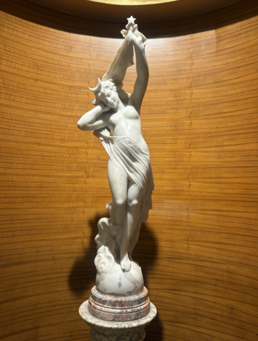

Audio Explanation
Cynthia

সিনথিয়া (MS - 3068) * সিনথিয়া হলেন গ্রিক দেবী, যিনি রোমান পুরাণে ডায়ানা নামে পরিচিত। তিনি চন্দ্র, অরণ্য, বন্যপ্রাণী এবং পবিত্রতার দেবী। তাঁর কপালে থাকা অর্ধচন্দ্রটি তাঁর প্রধান প্রতীক এবং এটিই নির্দেশ করে যে তিনি চন্দ্রদেবী। তাঁর পায়ের নিচের গোলকটি সমগ্র মহাবিশ্বের প্রতিনিধিত্ব করে। তাঁর হাতের নক্ষত্রটি অন্ধকারাচ্ছন্ন পরিবেশে আলো, দিক নির্দেশনা ও আশার প্রতীক। তাঁর শান্ত ও সুঠাম ভঙ্গি শান্তি, ভারসাম্য এবং ঐশ্বরিক শক্তির বহিঃপ্রকাশ ঘটায়। তাঁর আদর্শ শারীরিক গঠন ধ্রুপদী শিল্পরীতির অনুসারী, যেখানে সৌন্দর্য, সামঞ্জস্য ও পূর্ণতার ওপর গুরুত্ব দেওয়া হয়। এই ভাস্কর্যটি তাঁকে পবিত্রতা ও সুরক্ষার এক উজ্জ্বল প্রতীক হিসেবে তুলে ধরে, যিনি অন্ধকারের মধ্যেও পৃথিবীতে আলো ছড়িয়ে দেন।
Cynthia
सिंथिया (MS - 3068) * सिंथिया यूनानी देवी हैं, जिन्हें रोमन पौराणिक कथाओं में डायना के नाम से जाना जाता है। वे चंद्रमा, वनों, जंगली पशुओं और पवित्रता की देवी हैं। उनके मस्तक पर बना अर्धचंद्र उनका प्रमुख प्रतीक है, जो उनके चंद्रमा की देवी होने को दर्शाता है। उनके पैरों के नीचे बना गोलाकार पृथ्वी-गोला ब्रह्मांड का प्रतीक है। उनके हाथ में स्थित तारा प्रकाश, मार्गदर्शन और अंधकार में आशा का प्रतीक है। उनकी शांत और गरिमापूर्ण मुद्रा शांति, संतुलन और दैवी शक्ति को व्यक्त करती है। उनकी आदर्श शारीरिक बनावट शास्त्रीय कला-परंपराओं के अनुरूप है, जिनमें सौंदर्य, सामंजस्य और पूर्णता पर विशेष बल दिया जाता है। यह मूर्तिशिल्प उन्हें पवित्रता और संरक्षण के उज्ज्वल प्रतीक के रूप में प्रस्तुत करता है, जो अंधकार में भी संसार को प्रकाश प्रदान करती हैं।
Cynthia
ಸಿಂಥಿಯಾ (MS-3068) * ಸಿಂಥಿಯಾ (Cynthia) ಗ್ರೀಕ್ ದೇವತೆಯಾಗಿದ್ದು, ರೋಮನ್ ಪುರಾಣಗಳಲ್ಲಿ ಡಯಾನಾ ಎಂದು ಪ್ರಸಿದ್ಧಳಾಗಿದ್ದಾಳೆ. ಆಕೆಯು ಚಂದ್ರ, ಅರಣ್ಯಗಳು, ವನ್ಯಜೀವಿಗಳು ಮತ್ತು ಪವಿತ್ರತೆಯ ದೇವತೆಯಾಗಿದ್ದಾಳೆ. ಆಕೆಯ ಹಣೆಯ ಮೇಲಿರುವ ಅರ್ಧಚಂದ್ರ ಆಕೆಯ ಮುಖ್ಯ ಸಂಕೇತವಾಗಿದ್ದು, ಆಕೆಯು ಚಂದ್ರದೇವತೆ ಎಂಬುದನ್ನು ತೋರಿಸುತ್ತದೆ. ಆಕೆಯ ಪಾದಗಳ ಕೆಳಗಿರುವ ಗೋಳವು ಬ್ರಹ್ಮಾಂಡವನ್ನು ಪ್ರತಿನಿಧಿಸುತ್ತದೆ. ಆಕೆಯ ಕೈಯಲ್ಲಿರುವ ನಕ್ಷತ್ರವು ಕತ್ತಲೆಯಲ್ಲಿ ಬೆಳಕು, ಮಾರ್ಗದರ್ಶನ ಮತ್ತು ಭರವಸೆಯ ಸಂಕೇತವಾಗಿದೆ. ಆಕೆಯ ಪ್ರಶಾಂತ ಹಾಗೂ ಸುಂದರ ಭಂಗಿಯು ಶಾಂತಿ, ಸಮತೋಲನತೆ ಮತ್ತು ದೈವಿಕ ಶಕ್ತಿಯನ್ನು ಪ್ರದರ್ಶಿಸುತ್ತದೆ. ಆಕೆಯ ಆದರ್ಶ ದೇಹದ ಆಕಾರವು ಸೌಂದರ್ಯ, ಸಾಮರಸ್ಯ ಮತ್ತು ಪರಿಪೂರ್ಣತೆಯ ಮೇಲೆ ಗಮನಹರಿಸುವ ಶಾಸ್ತ್ರೀಯ ಕಲಾ ಸಂಪ್ರದಾಯಗಳನ್ನು ಅನುಸರಿಸುತ್ತದೆ. ಈ ಶಿಲ್ಪವು ಆಕೆಯನ್ನು ಪವಿತ್ರತೆ ಮತ್ತು ರಕ್ಷಣೆಯ ಬೆಳಕಿನ ಸಂಕೇತವಾಗಿ ಪ್ರಸ್ತುತಪಡಿಸುವುದರೊಂದಿಗೆ, ಕತ್ತಲೆಯಲ್ಲಿಯೂ ಜಗತ್ತಿಗೆ ಬೆಳಕನ್ನು ನೀಡುವ ದೇವತೆಯಾಗಿ ಪ್ರದರ್ಶಿಸುತ್ತದೆ.
Cynthia
സിന്തിയ (MS-3068) * റോമൻ പുരാണങ്ങളിൽ ഡയാന എന്നറിയപ്പെടുന്ന ഗ്രീക്ക് ദേവതയാണ് സിന്തിയ. ചന്ദ്രന്റെ യും വനങ്ങളുടെയും വന്യമൃഗങ്ങളുടെയും വിശുദ്ധിയുടെയും ദേവതയാണവർ. അവളുടെ നെറ്റിയിലെ ചന്ദ്രക്കലയാണ് പ്രധാന പ്രതീകം, അവൾ ചന്ദ്രന്റെ ദേവിയാണെന്ന് ഇത് കാണിക്കുന്നു. അവളുടെ പാദങ്ങൾക്ക് താഴെയുള്ള ഗ്ലോബ് പ്രപഞ്ചത്തെ പ്രതിനിധീകരിക്കുന്നു. അവളുടെ കയ്യിലെ നക്ഷത്രം ഇരുട്ടിലെ വെളിച്ചത്തെയും മാർഗ്ഗനിർദ്ദേശത്തെയും പ്രതീക്ഷയെയും സൂചിപ്പിക്കുന്നു. അവളുടെ ശാന്തവും മനോഹരവുമായ പോസ് സമാധാനവും സന്തുലിതാവസ്ഥയും ദൈവിക ശക്തിയും കാണിക്കുന്നു. സൗന്ദര്യം, ഐക്യം, പരിപൂർണ്ണത എന്നിവയിൽ ശ്രദ്ധ കേന്ദ്രീകരിക്കുന്ന ക്ലാസിക്കൽ കലാ പാരമ്പര്യങ്ങളാണ് അവരുടെ അനുയോജ്യമായ ശരീരഘടന പിന്തുടരുന്നത്. ഇരുട്ടിലും ലോകത്തിന് വെളിച്ചം പകരുന്ന, പരിശുദ്ധിയുടെയും സംരക്ഷണത്തിന്റെയും പ്രകാശഗോപുരമായി ഈ ശില്പം അവളെ അവതരിപ്പിക്കുന്നു.
Cynthia
ସିନ୍ଥିଆ (ଏମଏସ-3068) * ଏ ହେଉଛନ୍ତି 'ସିନ୍ଥିଆ'। ସେ ହେଉଛନ୍ତି ଗ୍ରୀକ୍ ପୁରାଣର ଦେବୀ, ଯାହାଙ୍କୁ ରୋମାନ୍ ପୁରାଣରେ 'ଡାୟାନା' ବୋଲି କୁହାଯାଏ। ସେ ଚନ୍ଦ୍ର, ଅରଣ୍ୟ, ବନ୍ୟଜନ୍ତୁ ଏବଂ ପବିତ୍ରତାର ଦେବୀ ଭାବେ ପୂଜିତା। ଆପଣ ଯଦି ମୂର୍ତ୍ତିଟିକୁ ଲକ୍ଷ୍ୟ କରିବେ, ତାଙ୍କ କପାଳରେ ଥିବା ଅର୍ଦ୍ଧଚନ୍ଦ୍ରଟି ତାଙ୍କର ମୁଖ୍ୟ ପ୍ରତୀକ, ଯାହା ସେ ଚନ୍ଦ୍ରର ଦେବୀ ବୋଲି ସୂଚାଉଛି। ତାଙ୍କ ପାଦତଳେ ଥିବା ଗୋଲକଟି ସମଗ୍ର ବ୍ରହ୍ମାଣ୍ଡକୁ ପ୍ରତିନିଧିତ୍ୱ କରୁଥିବା ବେଳେ ହାତରେ ଥିବା ତାରାଟି ଅନ୍ଧକାର ମଧ୍ୟରେ ଆଲୋକ, ମାର୍ଗଦର୍ଶନ ଏବଂ ଆଶାର ପ୍ରତୀକ ଅଟେ। ତାଙ୍କର ଏହି ଶାନ୍ତ ଓ ଶାଳୀନ ଭଙ୍ଗୀ ତାଙ୍କୁ ଶାନ୍ତି, ସନ୍ତୁଳନ ଏବଂ ଦୈବୀ ଶକ୍ତିକୁ ପ୍ରଦର୍ଶିତ କରୁଛି। ତାଙ୍କ ଶରୀରର ସୁନ୍ଦର ଗଠନ ପ୍ରାଚୀନ କଳାର ପରମ୍ପରାକୁ ଅନୁସରଣ କରେ, ଯେଉଁଥିରେ ସୌନ୍ଦର୍ଯ୍ୟ, ସୌହାର୍ଦ୍ଦ୍ୟ ଏବଂ ସମ୍ପୂର୍ଣ୍ଣତାକୁ ପ୍ରାଧାନ୍ୟ ଦିଆଯାଏ। ଏହି ଭାସ୍କର୍ଯ୍ୟଟି ତାଙ୍କୁ ପବିତ୍ରତା ଓ ସୁରକ୍ଷାର ଏକ ଉଜ୍ଜ୍ୱଳ ପ୍ରତୀକ ଭାବେ ଉପସ୍ଥାପିତ କରୁଛି, ଯିଏ ଅନ୍ଧକାର ମଧ୍ୟରେ ବି ସଂସାରକୁ ଆଲୋକିତ କରିଥାନ୍ତି।
Cynthia
சிந்தியா (MS-3068) * சிந்தியா ஒரு கிரேக்கத் தெய்வம்; ரோமானியப் புராணங்களில் இவர் டயானா என்று அழைக்கப்படுகிறார். இவர் நிலவு, காடுகள், வனவிலங்குகள் மற்றும் தூய்மை ஆகியவற்றின் தெய்வமாவார். இவரது நெற்றியில் உள்ள பிறை நிலவு இவரது முக்கிய அடையாளமாகவும், இவர் நிலவுத் தெய்வம் என்பதற்கான குறியீடாகவும் விளங்குகிறது. இவரது பாதங்களுக்குக் கீழே உள்ள கோளம் பிரபஞ்சத்தைக் குறிக்கிறது. இவரது கையில் உள்ள நட்சத்திரம் ஒளி, வழிகாட்டுதல் மற்றும் இருளில் நம்பிக்கையை வெளிப்படுத்துகிறது. இவரது அமைதியான மற்றும் நேர்த்தியான தோரணை அமைதி, சமநிலை மற்றும் தெய்வீக வலிமையை உணர்த்துகிறது. அழகு, இசைவு மற்றும் முழுமை ஆகியவற்றை மையமாகக் கொண்ட செவ்வியல் கலை மரபுகளின்படி இவரது உடல் வடிவம் செதுக்கப்பட்டுள்ளது. இருளிலும் உலகிற்கு ஒளியூட்டும் தூய்மை மற்றும் பாதுகாப்பின் ஒளிமிக்க அடையாளமாக இச்சிற்பம் இவரைச் சித்தரிக்கிறது..
Cynthia
సింథియా (MS - 3068) * రోమన్ పురాణాలలో డయానా అని పిలువబడే గ్రీకు దేవత సింథియా. ఆమె చంద్రుడు, అడవులు, అడవి జంతువులు మరియు స్వచ్ఛతకు లేదా పవిత్రతకు దేవత. ఆమె నుదిటిపై ఉన్న నెలవంక చంద్రుడు ఆమెకు ప్రధాన చిహ్నం మరియు ఆమె చంద్రదేవత అని చూపిస్తుంది. ఆమె పాదాల క్రింద ఉన్న గ్లోబ్ విశ్వాన్ని సూచిస్తుంది. ఆమె చేతిలో ఉన్న నక్షత్రం చీకటిలో కాంతి, మార్గదర్శకత్వం మరియు ఆశను సూచిస్తుంది. ఆమె ప్రశాంతమైన మరియు మనోహరమైన భంగిమ శాంతి, సమతుల్యత మరియు దైవిక శక్తిని చూపుతుంది. ఆమె ఆదర్శ శరీర ఆకారం అందం, సామరస్యం మరియు పరిపూర్ణతపై దృష్టి సారించే శాస్త్రీయ కళా సంప్రదాయాలను అనుసరిస్తుంది. ఈ శిల్పం ఆమెను స్వచ్ఛత మరియు రక్షణకు ప్రకాశించే చిహ్నంగా ప్రదర్శిస్తుంది, చీకటిలో కూడా ప్రపంచానికి వెలుగును తెస్తుంది.
Cynthia
سنتھیا (MS-3068) سنتھیا یونانی دیوی ہے، جسے رومی دیومالا میں ڈیانا کے نام سے جانا جاتا ہے۔ وہ چاند، جنگلات، جنگلی جانوروں اور پاکیزگی کی دیوی ہے۔ اس کے ماتھے پر بنا چاند اس کی اہم علامت ہے اور ظاہر کرتا ہے کہ وہ چاند کی دیوی ہے۔ اس کے قدموں کے نیچے موجود کرۂ ارض کائنات کی نمائندگی کرتا ہے۔ اس کے ہاتھ میں موجود ستارہ اندھیرے میں روشنی، رہنمائی اور امید کی علامت ہے۔ اس کا پُرسکون اور خوب صورت انداز امن، توازن اور الہی طاقت کو ظاہر کرتا ہے۔اس کی مثالی جسمانی ساخت کلاسیکی فن کی روایات کے مطابق ہے، جن میں خوب صورتی، ہم آہنگی اور کمال کو اہمیت دی جاتی ہے۔ یہ مجسمہ اسے پاکیزگی اور تحفظ کی روشن علامت کے طور پر پیش کرتا ہے، جو اندھیرے میں بھی دنیا کو روشنی عطا کرتی ہے۔
Cynthia
सिंथिया (एमएस-3068) * सिंथिया ही ग्रीक देवी आहे, जी रोमन पौराणिक कथांमध्ये डायना म्हणून ओळखली जाते. ती चंद्र, जंगले, वन्यप्राणी आणि पवित्रतेची देवी आहे. तिच्या कपाळावरील अर्धचंद्र हे तिचे मुख्य प्रतीक आहे आणि ती चंद्रदेवी असल्याचे दर्शवते. तिच्या पायाखालचा ग्लोब विश्वाचे प्रतिनिधित्व करतो. तिच्या हातातील तारा अंधारात प्रकाश, मार्गदर्शन आणि आशेचा प्रतीक आहे. तिची शांत आणि आकर्षक मुद्रा शांतता, संतुलन आणि दैवी शक्ती दर्शवते. तिचे आदर्श शरीर सौंदर्य, सुसंवाद आणि परिपूर्णतेवर लक्ष केंद्रित करणाऱ्या शास्त्रीय कला परंपरांचे अनुसरण करते. ही शिल्पकला तिला पवित्रता आणि संरक्षणाचे एक तेजस्वी प्रतीक म्हणून सादर करते, अंधारातही जगासमोर प्रकाश आणते.
Cynthia
સિન્થિયા (MS-3068) * સિન્થિયા ગ્રીક દેવી છે, જેને રોમન પૌરાણિક કથાઓમાં ડાયના તરીકે ઓળખવામાં આવે છે. તે ચંદ્ર, જંગલો, જંગલી પ્રાણીઓ અને શુદ્ધતાની દેવી છે. તેમના કપાળ પરનો અર્ધચંદ્ર ચંદ્ર તેમનું મુખ્ય પ્રતીક છે અને તે દર્શાવે છે કે તેઓ ચંદ્ર દેવી છે. તેના પગ નીચેનો ગ્લોબ બ્રહ્માંડનું પ્રતિનિધિત્વ કરે છે. તેના હાથમાંનો તારો અંધારામાં પ્રકાશ, માર્ગદર્શન અને આશાનો પ્રતીક છે. તેણીની શાંત અને આકર્ષક મુદ્રા શાંતિ, સંતુલન અને દૈવી શક્તિ દર્શાવે છે. તેણીનો આદર્શ શારીરિક આકાર શાસ્ત્રીય કલા પરંપરાઓને અનુસરે છે, જે સુંદરતા, સંવાદિતા અને પૂર્ણતા પર ધ્યાન કેન્દ્રિત કરે છે. આ શિલ્પ તેને શુદ્ધતા અને રક્ષણના ચમકતા પ્રતીક તરીકે રજૂ કરે છે, જે અંધારામાં પણ વિશ્વમાં પ્રકાશ લાવે છે.